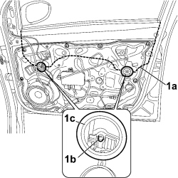
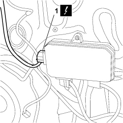
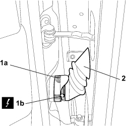
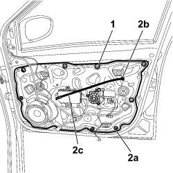

7005A08 INTERIOR SUPPORT FRAME FOR ONE SIDE DOOR - R.R. WITH DOOR PANEL REMOVED
- Path
- Procedures > 70 FITTINGS > 7005 PASSENGER COMPARTMENT FRONT SIDE DOORS > 7005A FRONT DOOR ASSEMBLY > 7005A08 INTERIOR SUPPORT FRAME FOR ONE SIDE DOOR - R.R. WITH DOOR PANEL REMOVED
- Kind
- repair procedure (removal / refitting; the operation number is the code)
- Applies to
- all engines; all production periods
- Interactive page
- https://sloeber94.github.io/elrnDB-fCrm/en/#/194000832
Applies to: all engines; all production periods
 Removing
Removing
 Refitting
Refitting1. Release glass (1a) from clips (1b) accessible through inspection holes (1c), raise to the end of its travel and support as appropriate.

Applies to: all engines; all production periods
1. Disconnect the electrical connection from the door node mirror.
Description | Connector | |
|---|---|---|
1 | DRIVER'S DOOR CONTROL UNIT (NPG) |
Description | Connector | |
|---|---|---|
1 | PASSENGER SIDE DOOR JUNCTION UNIT (NPP) |

Applies to: all engines; all production periods
1. Turn the ring nut (1a) and disconnect the front side door coupling (1b).
Description | Connector | |
|---|---|---|
1b | DRIVER'S FRONT DOOR JOIN |
Description | Connector | |
|---|---|---|
1b | PASSENGER FRONT DOOR JOIN |
2. Prise upthe front side door bulkhead couplings and push as far as possible into the door.

Applies to: all engines; all production periods
1. Unscrew the bolts and move the support frame with care.
Description | Connector | |
|---|---|---|
LEFT FRONT DOOR LOCK GEARED MOTOR |
Description | Connector | |
|---|---|---|
RIGHT FRONT DOOR LOCK GEARED MOTOR |
2. Release seal (2b) for passage of connection link (2c) and push inside, then remove support frame (2a).

Applies to: all engines; all production periods
Refitting
Removing- Bring the support frame up to the door and fit the front side door junction bulkhead couplings in their seat.
Description | Connector | |
|---|---|---|
LEFT FRONT DOOR LOCK GEARED MOTOR |
Description | Connector | |
|---|---|---|
RIGHT FRONT DOOR LOCK GEARED MOTOR |
- Position the support frame on the door and tighten the fixing bolts.
- Connect the mirror electrical connection to the door node.
Description | Connector | |
|---|---|---|
DRIVER'S DOOR CONTROL UNIT (NPG) |
Description | Connector | |
|---|---|---|
PASSENGER SIDE DOOR JUNCTION UNIT (NPP) |
- Connect the front side door junction and turn the lockring.
Description | Connector | |
|---|---|---|
DRIVER'S FRONT DOOR JOIN |
Description | Connector | |
|---|---|---|
PASSENGER FRONT DOOR JOIN |
Topics linked from this page (6)
- D030 DRIVER'S FRONT DOOR COUPLING
- D031 PASSENGER FRONT DOOR COUPLING
- M066 DRIVER'S DOOR CONTROL UNIT (NPG)
- M067 PASSENGER DOOR CONTROL UNIT (NPP)
- N050 LEFT FRONT DOOR LOCK GEARED MOTOR
- N051 RIGHT FRONT DOOR LOCK GEARED MOTOR
Topics that link to this page (13)
- 7005A09 FRONT SIDE DOOR INTERIOR SUPPORT FRAME - R.R.
- 7005A28 FRONT SIDE DOOR LIMITER - R.R.
- 7005C11 FRONT SIDE DOOR EXTERIOR HANDLE - R.R
- 7005C15 FRONT SIDE DOOR LOCK BARREL (IN HANDLE) - R+R
- 7005C40 CONNECTION LINK BETWEEN FRONT SIDE DOOR INTERNAL OPENING MECHANISM AND CATCH ONE LH OR RH R R
- 7005C43 LINK CONNECTING FRONT SIDE DOOR BARRELS/CATCH - R+R
- 7005D14 FRONT SIDE DOOR DESCENDING WINDOW GLASS - R.R. WITH DOOR PANEL (AND SUPPORT FRAME) REMOVED
- 7005D15 FRONT SIDE DOOR DESCENDING WINDOW GLASS (ONE) LEFT OR RIGHT - R.R
- 7005D33 CHANNEL FOR DOOR DESCENDING GLASS INNER GUIDE (ONE) LH OR RH ON FRONT SIDE DOOR - R.R.
- 7005M26 ELECTRIC WINDOW MECHANISM FOR ONE FRONT DOOR LH OR RH - R.R
- 7005N21 FRONT SIDE DOOR LOCK MOTOR/LOCK ASSEMBLEY FOR ONE DOOR, LEFT OR RIGHT - R.R.
- 7205E36 STRIPPING FRONT SIDE DOOR
- 7205E37 STRIPPING FRONT SIDE DOOR INTERIOR SUPPORT FRAME